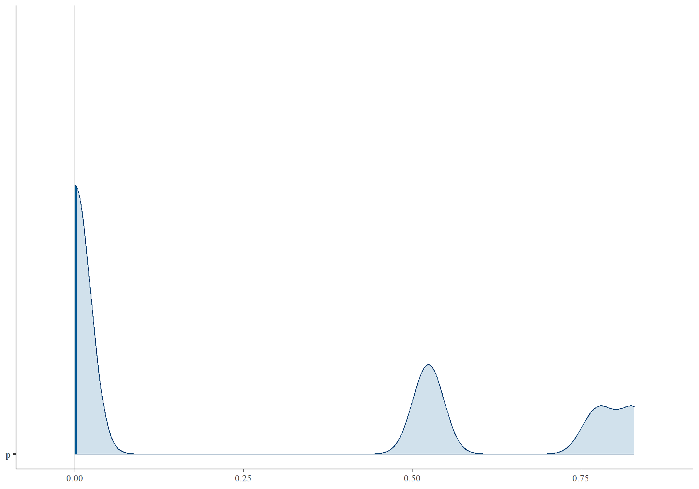
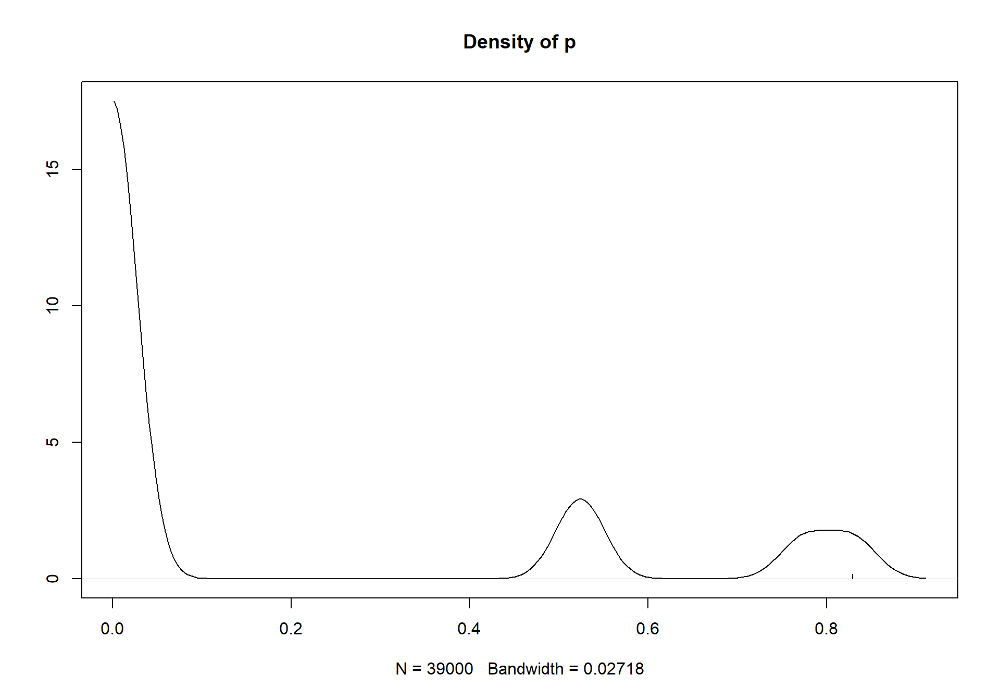
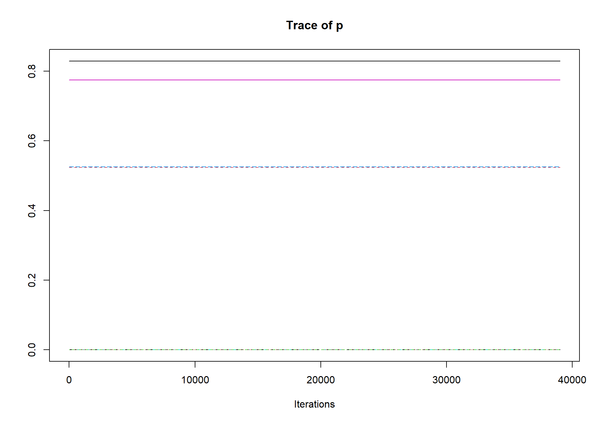
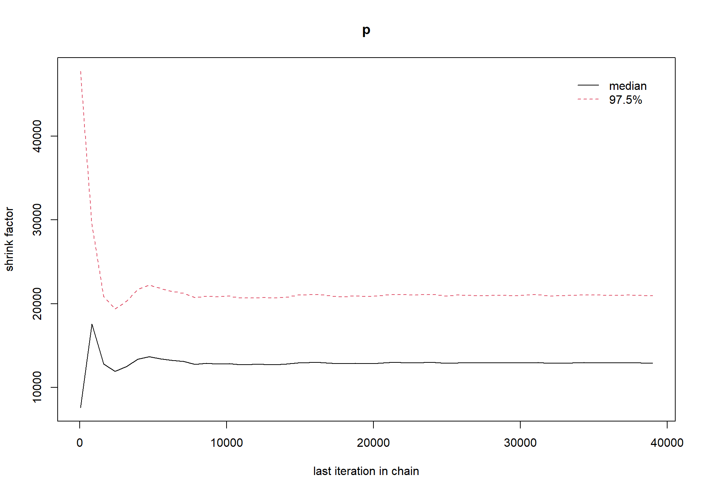
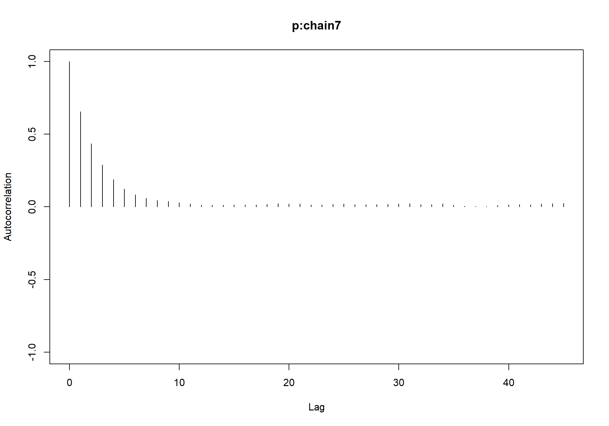
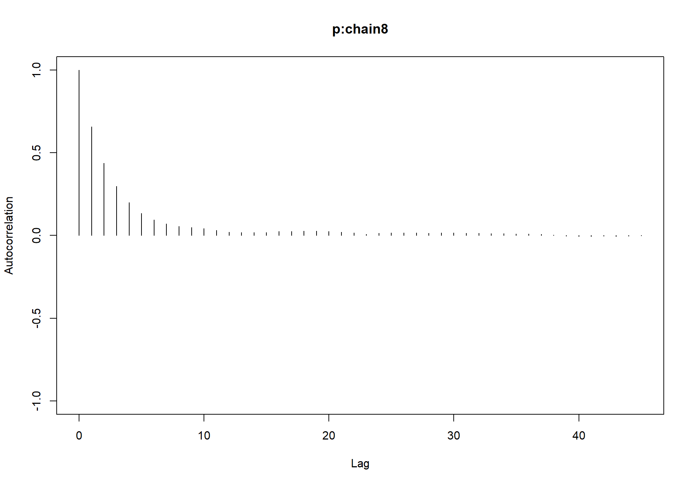
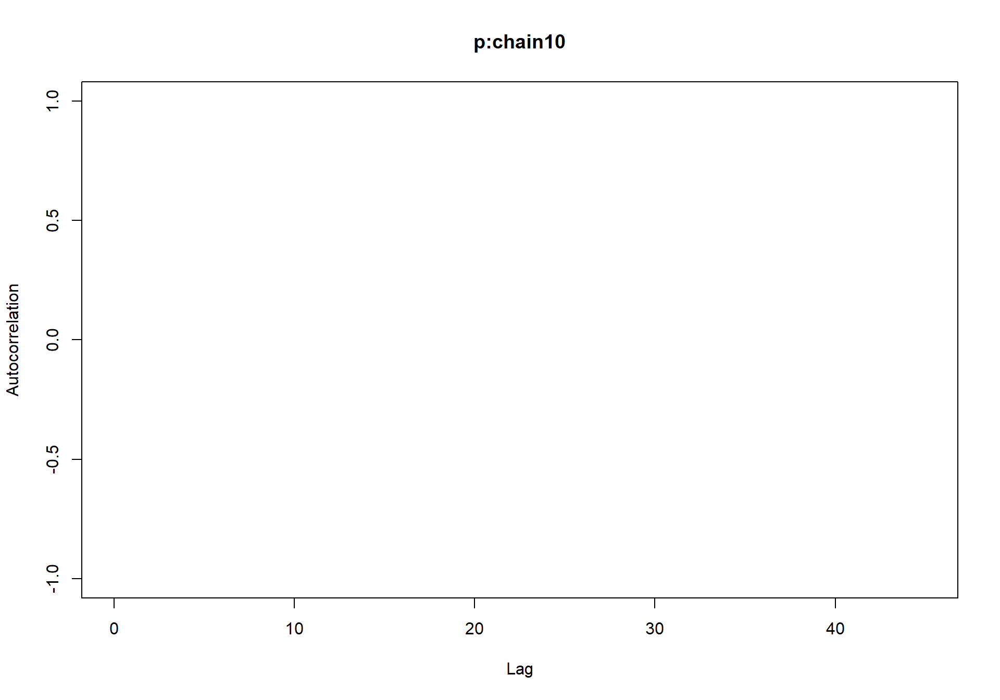
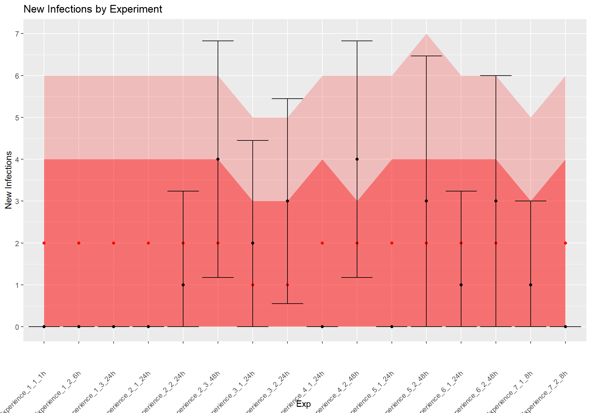

Title
Context
Data
Import libraries
library(nimble, warn.conflicts = FALSE)## nimble version 1.0.1 is loaded.
## For more information on NIMBLE and a User Manual,
## please visit https://R-nimble.org.
##
## Note for advanced users who have written their own MCMC samplers:
## As of version 0.13.0, NIMBLE's protocol for handling posterior
## predictive nodes has changed in a way that could affect user-defined
## samplers in some situations. Please see Section 15.5.1 of the User Manual.library(readxl)
library(coda)
library(loo)## This is loo version 2.6.0## - Online documentation and vignettes at mc-stan.org/loo## - As of v2.0.0 loo defaults to 1 core but we recommend using as many as possible. Use the 'cores' argument or set options(mc.cores = NUM_CORES) for an entire session.## - Windows 10 users: loo may be very slow if 'mc.cores' is set in your .Rprofile file (see https://github.com/stan-dev/loo/issues/94).library(ggplot2)
library(postpack)
library(mcmcplots)
library(bayesplot)## This is bayesplot version 1.10.0## - Online documentation and vignettes at mc-stan.org/bayesplot## - bayesplot theme set to bayesplot::theme_default()## * Does _not_ affect other ggplot2 plots## * See ?bayesplot_theme_set for details on theme settingImport data
sero <- read_excel("D:/Thesis/Tasks/pprTransmission/serology_binomial_const.xlsx")
head(sero)## # A tibble: 6 × 3
## Event Positives Negatives
## <chr> <dbl> <dbl>
## 1 Experience_1_1_1h 0 6
## 2 Experience_1_2_6h 0 6
## 3 Experience_1_3_24h 0 6
## 4 Experience_2_1_24h 0 6
## 5 Experience_2_2_24h 1 5
## 6 Experience_2_3_48h 4 2Model
Define Nimble code
ppr_code <- nimbleCode({
# Prior : Uniforme
p ~ dunif(0, 1)
# Likelihood : Bernoulli
for (i in 1:nrow(sero)) {
y[i] ~ dbinom(size = n[i], prob = p)
}
})Define inits and data
y <- sero$Positives
n <- sero$Positives + sero$Negatives
data = list(y=y, n=n)
inits = lapply(1:10, function(i) {
list(p = runif(1))
})Define Nimble model
ppr_mcmc <- nimbleMCMC(code = ppr_code,
data = data,
inits = inits,
nburnin = 1000,
niter = 40000,
nchains = 10,
setSeed = 123,
progressBar = TRUE,
samples = TRUE,
summary = TRUE,
WAIC = TRUE)## Defining model## Building model## Setting data and initial values## Running calculate on model
## [Note] Any error reports that follow may simply reflect missing values in model variables.## Checking model sizes and dimensions## Checking model calculations## Compiling
## [Note] This may take a minute.
## [Note] Use 'showCompilerOutput = TRUE' to see C++ compilation details.## running chain 1...## |-------------|-------------|-------------|-------------|
## |-------------------------------------------------------|## running chain 2...## |-------------|-------------|-------------|-------------|
## |-------------------------------------------------------|## running chain 3...## |-------------|-------------|-------------|-------------|
## |-------------------------------------------------------|## running chain 4...## |-------------|-------------|-------------|-------------|
## |-------------------------------------------------------|## running chain 5...## |-------------|-------------|-------------|-------------|
## |-------------------------------------------------------|## running chain 6...## |-------------|-------------|-------------|-------------|
## |-------------------------------------------------------|## running chain 7...## |-------------|-------------|-------------|-------------|
## |-------------------------------------------------------|## running chain 8...## |-------------|-------------|-------------|-------------|
## |-------------------------------------------------------|## running chain 9...## |-------------|-------------|-------------|-------------|
## |-------------------------------------------------------|## running chain 10...## |-------------|-------------|-------------|-------------|
## |-------------------------------------------------------|codaSamples <- post_convert(ppr_mcmc$samples)Summary Statistics
summary(codaSamples)##
## Iterations = 1:39000
## Thinning interval = 1
## Number of chains = 10
## Sample size per chain = 39000
##
## 1. Empirical mean and standard deviation for each variable,
## plus standard error of the mean:
##
## Mean SD Naive SE Time-series SE
## 2.393e-01 4.306e-02 6.896e-05 1.466e-04
##
## 2. Quantiles for each variable:
##
## 2.5% 25% 50% 75% 97.5%
## 0.1610 0.2092 0.2374 0.2670 0.3292p_mean <- mean(as.matrix(codaSamples))
cat("The mean probability of transmission is:", p_mean)## The mean probability of transmission is: 0.2393367mcmc_areas(codaSamples, prob = 0.95)
loo_result <- loo(as.matrix(codaSamples))## Warning: Relative effective sample sizes ('r_eff' argument) not specified.
## For models fit with MCMC, the reported PSIS effective sample sizes and
## MCSE estimates will be over-optimistic.print(loo_result)##
## Computed from 390000 by 1 log-likelihood matrix
##
## Estimate SE
## elpd_loo 0.2 NA
## p_loo 0.0 NA
## looic -0.5 NA
## ------
## Monte Carlo SE of elpd_loo is 0.0.
##
## All Pareto k estimates are good (k < 0.5).
## See help('pareto-k-diagnostic') for details.loo_result$diagnostics## $pareto_k
## [1] -0.0718257
##
## $n_eff
## [1] 389285.5Plot density plots for all chains
densplot(codaSamples)
Plot trace plots for all chains
traceplot(codaSamples)
Convergence Diagnostics
Gelman-Rubin diagnostic
gelman.diag(codaSamples)## Potential scale reduction factors:
##
## Point est. Upper C.I.
## p 1 1gelman.plot(codaSamples) ## Geweke’s convergence diagnostic
geweke.diag(codaSamples)## $chain1
##
## Fraction in 1st window = 0.1
## Fraction in 2nd window = 0.5
##
## p
## -0.5762
##
##
## $chain2
##
## Fraction in 1st window = 0.1
## Fraction in 2nd window = 0.5
##
## p
## -0.6867
##
##
## $chain3
##
## Fraction in 1st window = 0.1
## Fraction in 2nd window = 0.5
##
## p
## -1.587
##
##
## $chain4
##
## Fraction in 1st window = 0.1
## Fraction in 2nd window = 0.5
##
## p
## -1.538
##
##
## $chain5
##
## Fraction in 1st window = 0.1
## Fraction in 2nd window = 0.5
##
## p
## -1.82
##
##
## $chain6
##
## Fraction in 1st window = 0.1
## Fraction in 2nd window = 0.5
##
## p
## -0.7243
##
##
## $chain7
##
## Fraction in 1st window = 0.1
## Fraction in 2nd window = 0.5
##
## p
## -1.434
##
##
## $chain8
##
## Fraction in 1st window = 0.1
## Fraction in 2nd window = 0.5
##
## p
## 0.3825
##
##
## $chain9
##
## Fraction in 1st window = 0.1
## Fraction in 2nd window = 0.5
##
## p
## -1.442
##
##
## $chain10
##
## Fraction in 1st window = 0.1
## Fraction in 2nd window = 0.5
##
## p
## -1.857`
geweke.plot(codaSamples)


Plot autocorrelation plots for all chains
autocorr.plot(codaSamples)
Effective sample size
effectiveSize(codaSamples)## p
## 86289.09Posterior predictive checks
Simulate replicated data
N <- nrow(sero)
y_rep <- numeric(N)
for(i in 1:N){
n_i <- as.integer(sero$Positives[i] + sero$Negatives[i])
y_rep[i] <- rbinom(1, size=n_i, prob=p_mean)
}Distribution check
hist(y_rep)
hist(y)
compare_df <- data.frame(obs = y, sim = y_rep)
compare_df## obs sim
## 1 0 2
## 2 0 0
## 3 0 1
## 4 0 1
## 5 1 2
## 6 4 1
## 7 2 0
## 8 3 3
## 9 0 1
## 10 4 1
## 11 0 1
## 12 3 4
## 13 1 3
## 14 3 0
## 15 1 0
## 16 0 0Performance metrics
rmse <- sqrt(mean((y - y_rep)^2))
r2 <- 1 - sum((y - y_rep)^2) / sum((y - mean(y))^2)
print(paste("RMSE :", rmse))## [1] "RMSE : 1.69558249578132"print(paste("R-squared :", r2))## [1] "R-squared : -0.286713286713287"# Create a data frame for plotting
plot_data <- data.frame(
Event = rep(sero$Event),
obs_pos = sero$Positives,
obs_neg = sero$Negatives,
sim_pos = y_rep,
sim_neg = n - y_rep
)Create Q-Q plot
ggplot(plot_data, aes(sample = obs_pos)) +
geom_qq(aes(sample = sim_pos), color = "blue", alpha = 0.7) +
geom_abline(intercept = 0, slope = 1, color = "red") +
labs(x = "Theoretical Quantiles (Observed)", y = "Sample Quantiles (Replicated)") +
ggtitle("Q-Q Plot: Observed vs. Replicated Data")
# Combine the datasets for comparison
boxplot_data <- data.frame(Type = c(rep("Observed", length(y)), rep("Replicated", length(y_rep))),
Values = c(y, y_rep))Create box plot
# Create box plot with individual data points
ggplot(boxplot_data, aes(x = Type, y = Values, fill = Type)) +
geom_boxplot(outlier.shape = NA) + # Hide outlier points in the box plot
geom_jitter(data = boxplot_data, width = 0.2, alpha = 0.5) + # Add individual data points
labs(x = "Data Type", y = "Values") +
ggtitle("Box Plot with Individual Data Points: Observed vs. Replicated Data")